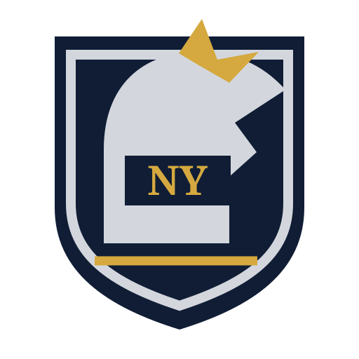
Americas
New York Knights
A forward chess knight cut by Manhattan street lines.
Original vector marks designed to remain identifiable on standings tables, tactical maps, uniforms, and full-field projections.

A forward chess knight cut by Manhattan street lines.
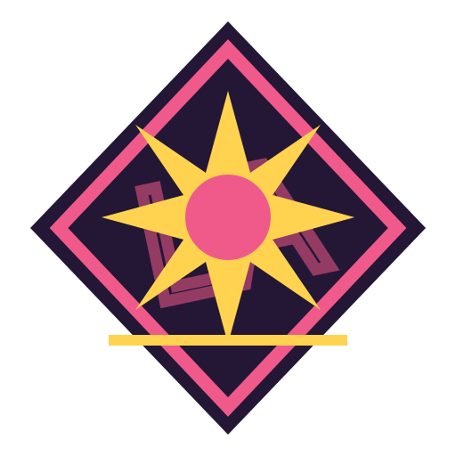
A cinematic eight-point star over a westward horizon.
An eagle descending over the high plateau.
A split-tone husky mask built from ice facets.
A metropolitan pulse line becoming a tropical leaf.
A gaucho hat and looping lariat over river blue.
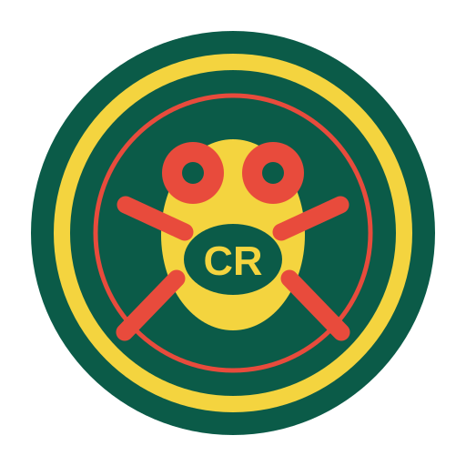
A bright tree frog poised inside a rainforest ring.

The approved geometric civic crest and central wind star.
Crossed hardwood bats striking through a river-city monogram.
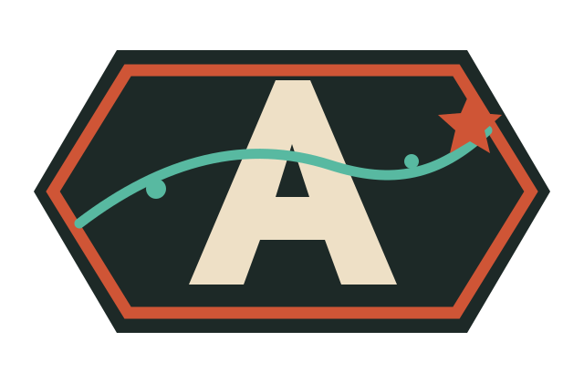
The approved angular route badge and lone navigation star.
Mount Rainier rising through a cadence of rain.
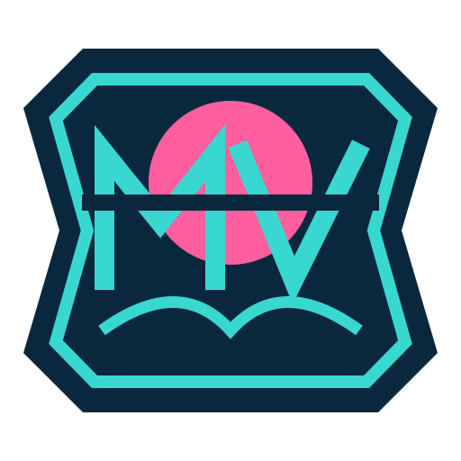
A neon causeway crossing a low tropical sun.
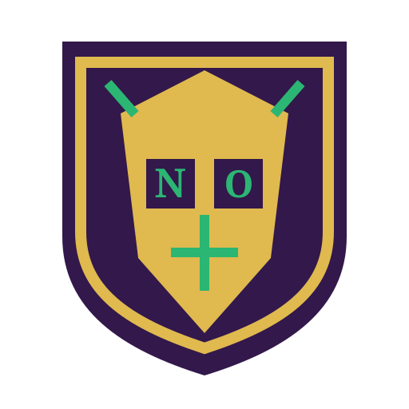
A ceremonial mask with crescent eyes and protective stitch marks.
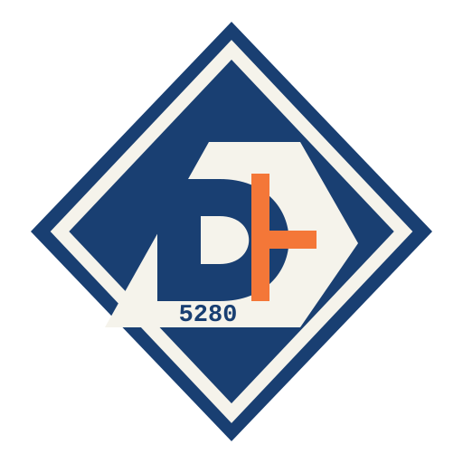
Twin fourteeners under an ascending altitude chevron.
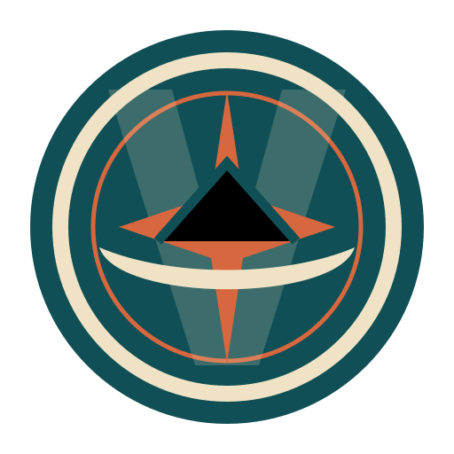
A coastal canoe crossing a compass rose.
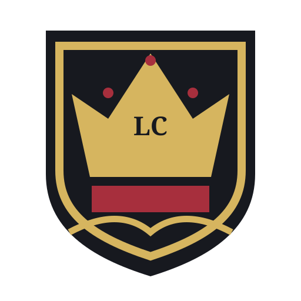
A severe crown rising above the Thames tide marks.

Interlocking industrial rings crossed by a single unifying bar.
A stacked ossuary arch beneath a Parisian keystone.
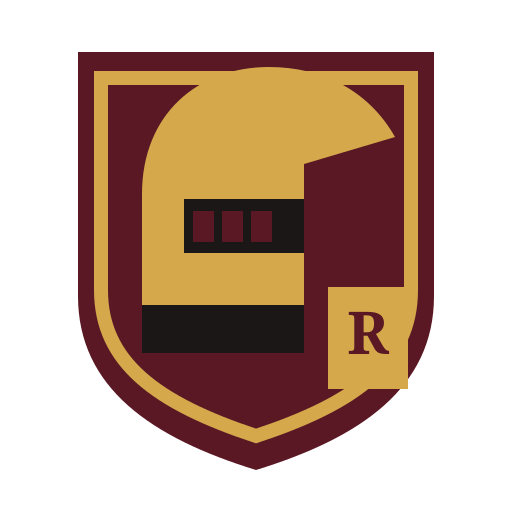
A legionary helmet cut into SPQR-red armor.
A radiant court sun wearing a compact royal crown.
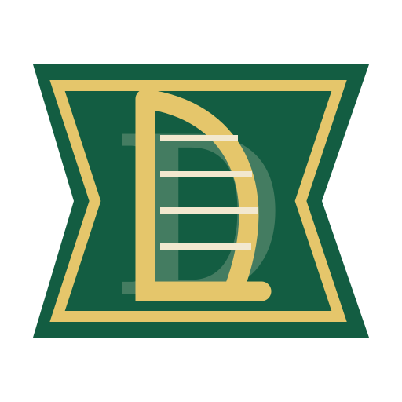
A taut harp whose strings double as tactical lanes.
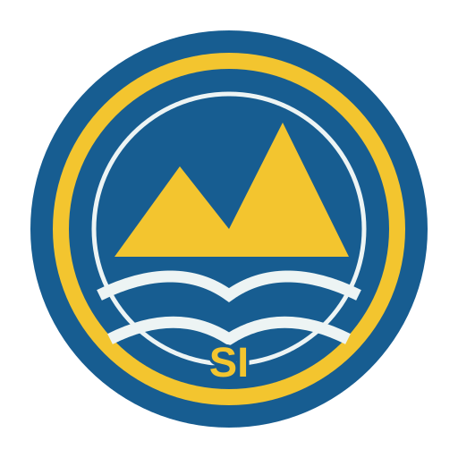
Three granite islands linked across cold northern water.
A Janissary headpiece set against a Bosporus crescent.
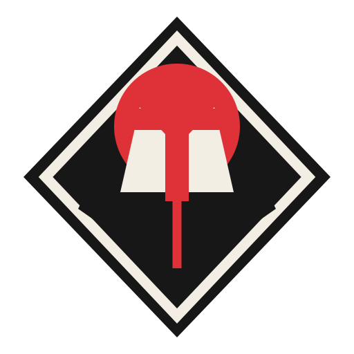
A solitary ronin helmet beneath a rising red disc.
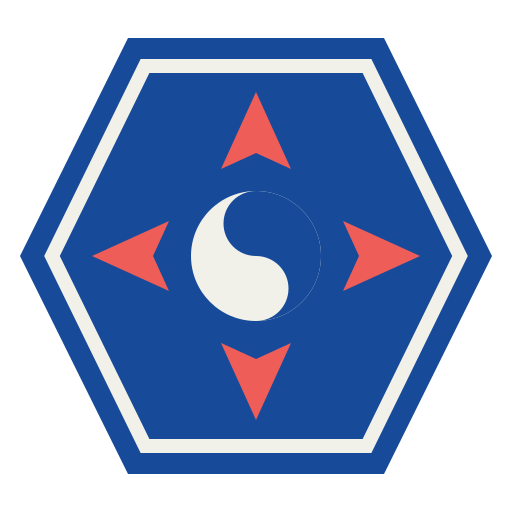
Five converging arrows arranged like a tactical taegeuk.
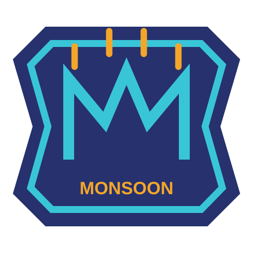
Monsoon rain folding into a gateway-shaped M.
A five-petal orchid built around a harbor star.
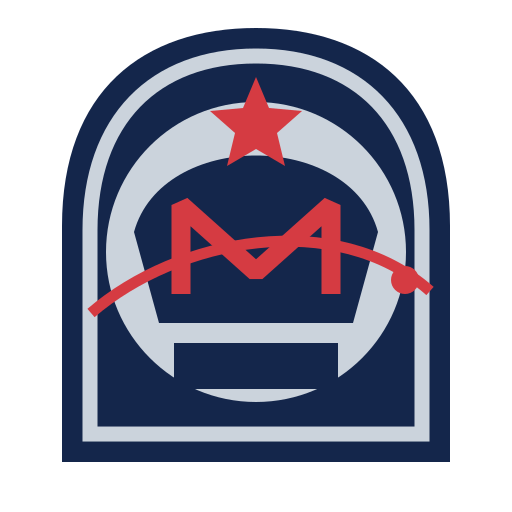
A cosmonaut visor crossed by a polar orbital track.
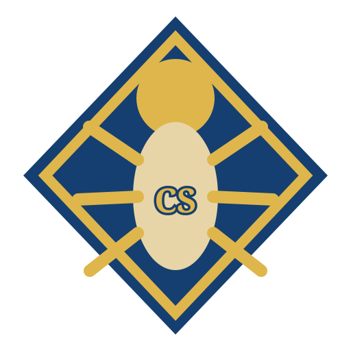
A lapis scarab carrying a solar disc over desert geometry.
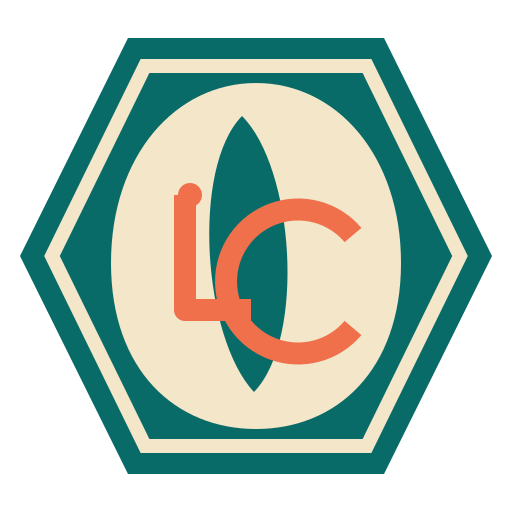
A cowrie shell split by lagoon currents and market lines.